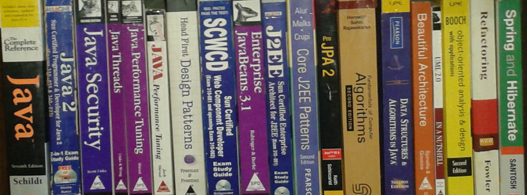

Raza Naqui
Advisory Software Engineer | Backend Specialist | Java Enthusiast
Advisory Software Engineer | Backend Specialist | Java Enthusiast
I'm Raza Naqui, an Advisory Software Engineer at IBM Labs Ireland and a certified Java programmer with over 20 years of experience in designing and developing large-scale, high-performance software systems.
At IBM for over 10 years, I’ve contributed to key projects like IBM Talent Management Solutions, IBM Connections, and currently work on IBM Process Mining. My expertise lies in Java/J2EE, backend development, microservices, and the Spring Framework.
I also have hands-on experience with Kubernetes, Docker, IBM OpenShift, Groovy, Shell scripting, and SQL/PL-SQL. I’ve worked in various roles including Technical Lead, Scrum Master, and Individual Contributor, thriving in global, multicultural teams.
|
 |
Building scalable backend solutions for process analysis and improvement.
Designed modules to manage organizational talent and HR operations.